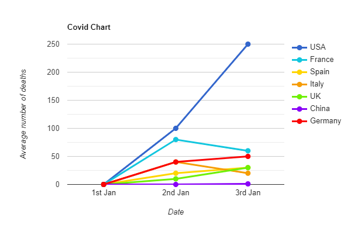
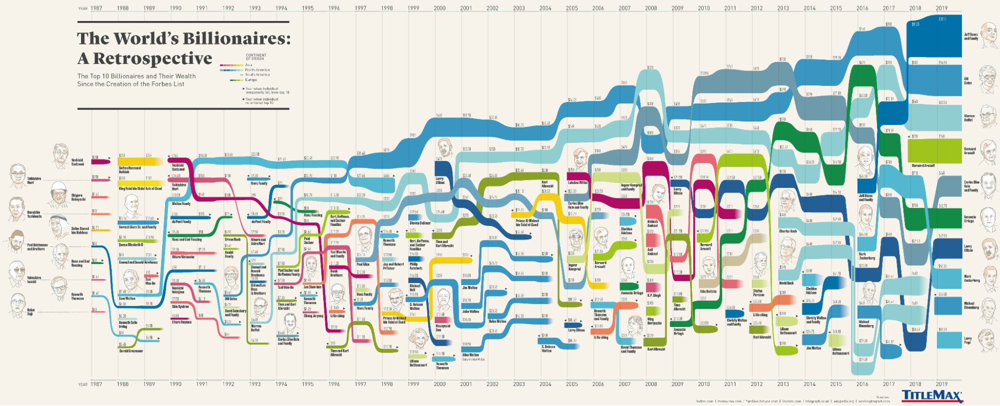
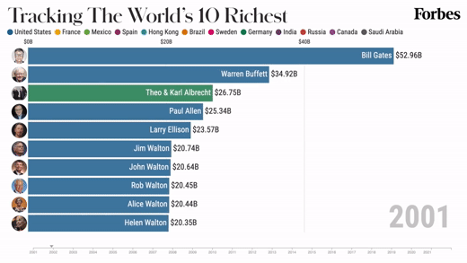

| Task (Why) |
The visualisation illustrates the increase or decrease as well as the average number of deaths per day resulting from the Covid-19 pandemic in the USA, China and various European countries. Additionally, the visualisation attempts to visualise the trends for the deaths in each country based on the dates where the countries implemented lockdown or quarantine measures. |
| Idiom (How) |
The visualisation is represented as a line graph mixed with a scatterplot where each point is connected via a line. Colours are used as an identity channel to uniquely identify the different categories (Countries), while size (Thickness of the lines) is used to highlight the intensity of the average number of deaths per day (a thicker line represents more deaths). |
| Data (What) | The visualisation depicts 2 quantitative attributes on the axes (x and y):
|
| Critique |
The line for the USA ends with an arrowhead, while the line for the UK ends with just the point itself. For the rest of the countries, the line ends with a virus icon. Each country has a different end date (e.g. USA ends on 3rd April while England and Wales end on 10th April). Some of the points along the chart have date labels associated with the points whereas others are missing the date labels. Inconsistent usage of numbers (e.g. “2” weeks for Spain and “two” weeks for the other countries) and text (Year is shown on the description text for Italy [Orange tag], whereas the years are not shown for the other countries). |
| Improvements | Increase Consistency
Example of possible improvement (Graph is for demonstration purposes and is not to scale with original):

|
Visualisation #2
Source: https://www.titlemax.com/discovery-center/lifestyle/the-top-10-richest-billionaires-by-year-since-1987/
| Task (Why) |
The visualisation illustrates the top 10 billionaires, where they are from and the net worth of their wealth for each of the years from 1987 to 2019. The visualisation also tracks the rise and fall of the wealth of the top 10 billionaires over the years, while also noting the periods where the individuals temporarily fell from top 10 before re-entering the ranking. |
| Idiom (How) |
The visualisation is represented as a cross between a line and a horizontal bar chart with the x-axis representing the year and the y-axis representing the billionaire involved. A colour scale is used as an identity channel to identify the different continents and countries of origin for the respective billionaires, while size (thickness of the bars) is used to highlight the amount of individual's net worth (a thicker bar represents a higher net worth). |
| Data (What) | The visualisation depicts 1 quantitative attribute:
|
| Critique |
During the time period of 1988 - 2018, various billionaires received image depictions, while others do not. There are some inconsistencies in the images depicted in the graph (e.g. The image shown for Jeff Bezos in 2016 is different from the one shown in 2019, whereas the images for the other billionaires remained the same). The colour scale provided for the different continents provides no context on the countries they are representing and hence it is difficult to differentiate between the lighter scales from the darker scales. It is difficult to visualise the changes in the wealth of the billionaires over the years. This is because the chart is focused on ranking the top 10 billionaires for each year, with their wealth being represented only through the thickness of the bars (e.g. Warren Buffet's wealth grew from 2017 to 2018, but since he was ranked the 3rd in 2019, it looks as if his wealth had decreased). It is difficult to tell the position of the person in a respective year (e.g. the 3rd richest person in the world for 1989 is Forrest Mars Sr and Family, but visually it looks like he is in the 4th place due to the clutter). |
| Improvements | Increase Consistency
Example of possible improvement (Graph is for demonstration purposes and is not intended to scale with original):

|